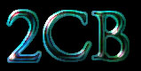

2CB is one of my favorite entheogens. It has many of the empathogenic qualities of MDMA, but seems much more honest to me. Also, unlike MDMA, it is definitely psychedelic. My 2CB experiences have been almost entirely positive.
- First 2CB - Walking Around Town
- Sitting Around
- Bees, Bars, and Salvia (2CB + Salvia)
- Contact
- Chilling with Friends
- Rave on Halloween
- A Day in the Park (5-MeO-DMT/2CB)
- Burning Man Trip 1
- Burning Man Trip 3
- New Year's Eve (MDMA + 2CB)
- Birthday Bees and LSD (2CB + LSD)
- L's First Bees (BM 99 Trip 2)
- Strange Latitudes (2CB + Ketamine)
- 2CBlast